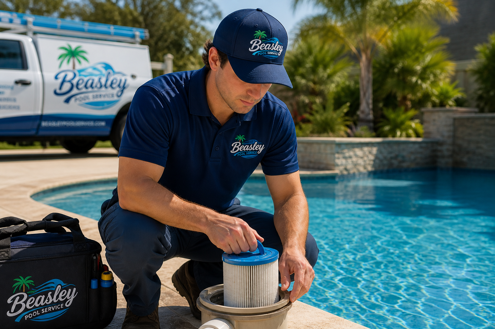

About Us
Beasley Pool Service is a locally focused business dedicated to providing reliable and high-quality pool care for homeowners throughout Laurens County. With a strong commitment to consistency and attention to detail, we help customers maintain clean, safe, and fully functional pools year-round.
Our background is built on hands-on experience and a practical understanding of what it takes to properly maintain a pool. From routine cleaning and from chemical balancing to equipment inspections and repairs, we approach every job with the goal of preventing problems before they become costly issues.
We offer a full range of services, including regular maintenance, leak detection, equipment repair, new pool construction, liner installation, and seasonal pool openings and closings. Each service is designed to keep your pool operating efficiently while extending your system's life.
As a local business serving Laurens County, we take pride in building long-term relationships with our customers. Our focus is on dependable service, clear communication, and delivering results you can trust every time.

Need Pool Service?
Contact us today for a quote or to schedule an appointment.
Contact Us